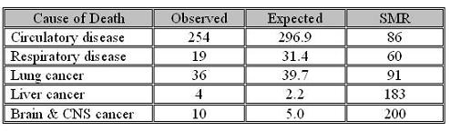

Example: Age Adjust - Petrochemical Workers
Lead Author(s): Jeff Martin, MD
Person-Time Rates for Cohort Analysis
In Austin's (1983) study of petrochemical workers:
Cohort of petrochemical workers
- 6,588 white male employees of Texas plant
Mortality determined from 1941-1977
- 137,745 person-years of follow-up time
- 765 deaths
Overall death rate =
- 765 / 137,745 person-years =
- 5.6 per 1000 person-years
Question: Is this a high death rate?
Calculate Standardized Mortality Ratio
In this study:
- Apply U.S. death rates for age-sex-race-calendar period groups to the cohort,
- 924 deaths (from the U.S. population data from the National Center for Health Statistics) were expected in the cohort
- versus the 765 observed
Ratio of 765 observed/924 expected =
This is called a Standardized Mortality Ratio (SMR).
Healthy Worker Effect
The problem with this analysis is what is known as the healthy worker effect.
- In this example the observed rate in the cohort of petrochemical workers was actually lower than expected if the U.S. mortality rates had been present.
- This is a common outcome of cohort studies of workers when they are compared to the general U.S. population because workers need to have a level of health in order to work which makes them generally healthier than the entire U.S. population in the same age groups.
Cause Specific SMRs
More specific outcomes might be more revealing, such as whether the cohort experienced a higher than expected rate of certain types of cancer that are suspected of being caused by petrochemical exposure, and, in fact, the research question that prompted the study was whether there was evidence for occupational risk of brain tumors in the petrochemical industry.
A sample of a number of cause-of-death specific comparisons that were made in the study are shown here.

These specific SMR's are for employess who were hourly and had greater than six months of employment.
Given the large numbers of comparisons that were made and hence the probability of finding a significantly elevated SMR by chance, interpretation of the these subgroup results has to be made with caution.
Although the SMR for brain and CNS tumors had an associated p-value of 0.05 for this subgroup, overall in all employees the SMR for brain and CNS was 162 with 95% CI = 83-283, and the authors concluded that there was insufficient evidence to say that these were occupationally caused tumors.
References
Austin, S. G., & Schnatter, A. R. (1983). A cohort mortality study of petrochemical workers. J Occup Med, 25(4), 304-312.